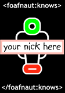

| NEWS |
|
Jim has left us. We now have no svg developers. Woe! link |
| Zool made a nice thing showing tube stations in svg. We all admired. But she doesn't know javascript. Foo! link |
| HOME | FAQ | FOAF | SVG | WIKI | RDF |
hello danbriHere's a preliminary design for the FOAFnaut website. Right now, I am messing around with some styles that I hope will allow us to build some easily maintained pages. I'm not quite sure what I'm doing with the navigation yet. I like the idea of using the above table to divide the site roughly into sections, and being pretty flexible (read: chaotic) about where sub-navigation goes. Geeks seem to like that sort of thing. The menu can very easily be removed for the initial launch if we decide we don't need it. Here's a sample link So not much in here yet. I am still tinkering really. It's very difficult to design without really knowing what sort of information and structure I am working with, so I am aiming to keep it all as open as possible. Please comment! |
| © 2003 foafnaut.org |
|
support foafnaut  buy a l33t tshirt |
| USEFUL LINKS |
|
Dean's a very smart fellow. Here's his website link |